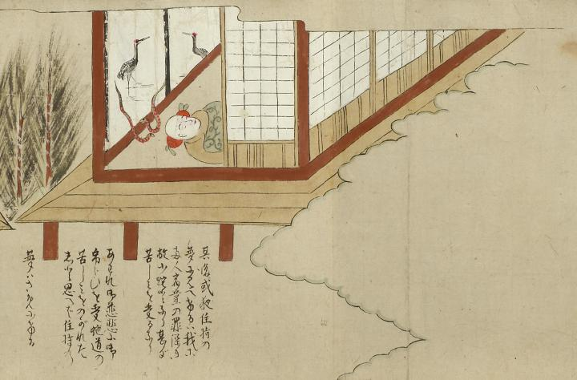

夢；ユメ，蛇；ヘビ，清姫；キヨヒメ，安珍；アンチン

部屋の中で横たわり眠る住持の枕元に現れる2匹の蛇。安珍と清姫の姿である。蛇腹に赤いまだらの模様があり、2匹は向かい合い尾を高く上げている。蛇の後ろには2羽の向かい合う鶴が描かれた襖がある。画面は縁側の外から開いた障子ごしに部屋の中を描いている。詞書には「其後或夜住持の夢に見へけるは我等両人宿業の罪深き故少蛇となり甚だ苦しみを受るなりあわれ御慈悲に御弔らひを受蛇道の苦しみをのがれたしと思へば住持の夢はさめにける」とある。
出典：親書誌：U426_nichibunken_0055：道成寺縁起；ドウジョウジエンギ／日付：2006／資源識別子：U426_nichibunken_0055_0008_0000
Copyright (c)2010- International Research Center for Japanese Studies, Kyoto, Japan. All rights reserved.